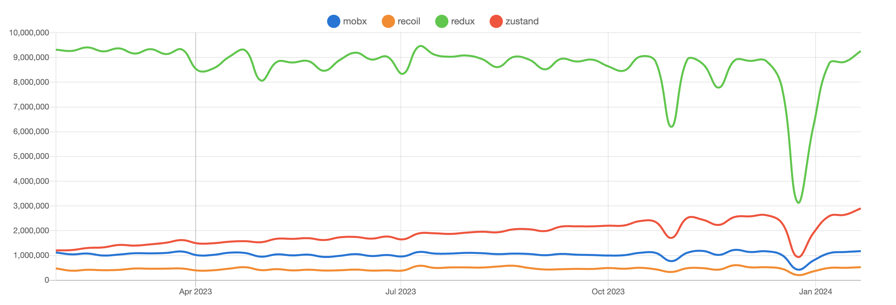

리액트 상태 관리 라이브러리 비교
2024. 2. 7.
React
0. npm trends 비교

1. Redux
Redux는 JavaScript 애플리케이션을 위한 예측 가능한 상태 컨테이너로, 상태 관리를 위한 견고한 아키텍처를 제공합니다.
장점
중앙 집중식 상태 관리
애플리케이션의 상태를 한 곳에서 관리하며, 상태 변화는 순수 함수인 리듀서를 통해 이루어집니다.
예측 가능한 상태 관리
Redux는 엄격한 상태 변경 규칙과 순수 함수인 리듀서를 통해 상태 변화를 관리합니다. 이는 상태 변화를 예측 가능하고 추적 가능하게 만듭니다.
타임 트래블 디버깅
상태 변화를 기록하고 재생할 수 있는 기능을 통해 디버깅이 용이합니다.
개발자 도구 활용
Redux DevTools와 같은 도구를 통해 상태 변화를 시간에 따라 추적하고, 액션을 재현하며, 상태 변화를 디버깅할 수 있습니다.
사용자 수와 커뮤니티
Redux는 많은 사용자와 커뮤니티를 가지고 있으며, 큰 규모의 애플리케이션에 적합하고 많은 플러그인, 미들웨어, 유틸리티가 지원됩니다
단점
보일러플레이트 코드
액션 타입, 액션 생성자, 리듀서 등을 매번 작성해야 하므로 초기 설정과 상태 로직 관리를 위해 많은 코드가 필요합니다.
복잡성
큰 애플리케이션에서 여러 리듀서를 조합하고, 미들웨어를 관리하는 것이 복잡할 수 있습니다.
비동기 로직의 복잡성
Redux 자체는 비동기 작업을 처리하지 않기 때문에 Redux Thunk, Redux Saga와 같은 미들웨어를 사용해야 합니다.
2. Zustand
Zustand는 설정이 간단하고, 직관적인 API를 제공하는 상태 관리 라이브러리입니다. Redux나 Recoil에 비해 더 가벼우며, 상태 관리를 매우 간결하게 할 수 있습니다.
장점
간결하고 직관적인 API
Zustand는 매우 단순하고 직관적인 API를 제공하며, 상태 관리를 위한 최소한의 설정만 필요합니다.
컴포넌트 외부에서의 상태 관리
Zustand는 컴포넌트 밖에서도 상태를 쉽게 관리할 수 있게 해줍니다. 이는 테스트와 재사용을 용이하게 만듭니다.
유연성과 확장성
Zustand는 미들웨어를 통해 상태 로깅, 지속성, 비동기 처리와 같은 기능을 쉽게 추가할 수 있습니다.
비동기 지원
Zustand는 비동기 작업을 쉽게 처리할 수 있는 기능을 제공합니다.
단점
구조적 제약
매우 단순하고 유연한 구조를 가지고 있지만, 이로 인해 큰 규모의 애플리케이션에서는 상태 관리 구조가 복잡해질 수 있습니다.
대규모 프로젝트에서의 검증
Zustand는 아직 대규모 프로젝트에서의 사용 사례가 많이 보고되지 않았습니다. 따라서, 큰 규모의 프로젝트에서는 신중하게 고려해야 합니다.
3. MobX
MobX는 반응형 프로그래밍 패러다임을 사용하여 상태를 관리합니다. 애플리케이션의 상태가 변경될 때 자동으로 관련된 컴포넌트가 업데이트됩니다.
장점
반응형 프로그래밍
상태가 변경될 때 자동으로 관련된 컴포넌트가 업데이트됩니다.
성능 최적화
종속성 추적을 통해 불필요한 계산이나 리렌더링 없이 효율적으로 작동합니다.
유연성과 간결성
MobX는 상태를 변경하고 사용하는 방법이 간결하고 직관적입니다. 개발자는 비교적 적은 코드로 상태 관리 로직을 구현할 수 있습니다.
다양한 데이터 구조 지원
MobX는 객체, 배열, Map, Set 등 다양한 데이터 구조를 자연스럽게 지원합니다.
단점
추상적인 개념과 러닝커브
반응형 프로그래밍과 종속성 추적은 새로운 사용자에게 다소 추상적이고 이해하기 어려울 수 있습니다.
TypeScript와의 통합 복잡성
MobX는 TypeScript와 함께 사용할 수 있지만, 때때로 타입 시스템과의 통합이 복잡하거나 추가적인 설정을 요구할 수 있습니다.
대규모 상태 관리 시 복잡성
MobX를 사용하는 대규모 애플리케이션에서는 상태 관리의 복잡성을 관리하기 위한 추가적인 구조와 패턴이 필요할 수 있습니다.
4. Recoil
Recoil은 React의 기본적인 개념과 함께 작동하도록 설계된 상태 관리 라이브러리입니다. Atom과 Selector를 사용하여 상태 관리를 수행합니다.
장점
React와의 일관된 패턴
Recoil의 상태는 React의 hooks와 같이 사용될 수 있으며, 컴포넌트 기반 아키텍처와 잘 통합됩니다.
Atom 기반의 상태 기반를 통한 렌더링 최적화
Recoil은 컴포넌트가 필요로 하는 최소한의 상태 변화만을 구독하도록 하여 불필요한 렌더링을 방지합니다.
유연한 데이터 흐름
Selector를 통해 상태에 기반한 파생 데이터를 쉽게 생성하고 관리할 수 있습니다.
단점
상태 복구와 타임 트래블 디버깅의 제한
Redux의 DevTools와 같은 강력한 상태 타임 트래블 기능을 지원하지 않습니다. Recoil의 상태 변화를 시각화하고 이전 상태로 돌아가는 것이 Redux에 비해 덜 직관적일 수 있습니다.
React에 의존적
Recoil은 React와 밀접하게 통합되어 있어, 다른 프레임워크나 라이브러리와의 호환성이 제한적일 수 있습니다.
컴포넌트 간 상태 공유의 복잡성
Recoil에서는 atom과 selector를 사용하여 상태를 관리하는데 atom과 selector가 오히려 상태 관리 구조를 복잡하게 만들 수 있습니다.
서버 사이드 렌더링(SSR) 지원의 제한
Recoil은 클라이언트 사이드에서 잘 작동하지만, 서버 사이드 렌더링을 사용하는 애플리케이션에서는 사용하기가 더 복잡할 수 있습니다. SSR을 사용할 때 Recoil 상태의 동기화와 복구가 추가적인 구현을 필요로 할 수 있습니다.